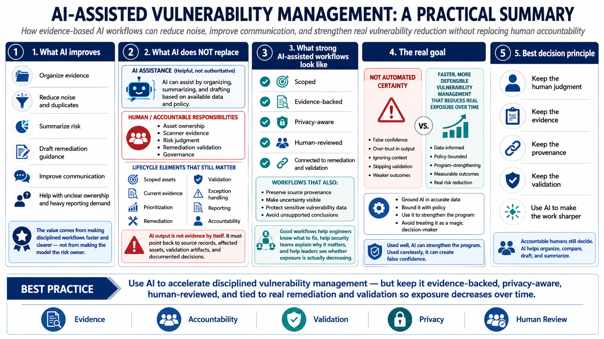

Course Summary and Key Takeaways
Connecting to LMS... Progress: in progress

Narration
AI can improve vulnerability management by organizing evidence, reducing noise, summarizing risk, drafting remediation guidance, and improving communication. It is especially helpful when teams face duplicate findings, inconsistent formats, large backlogs, unclear ownership, and repeated reporting demands. The value comes from making disciplined workflows faster and clearer, not from pretending the model is a risk owner.
AI does not replace asset ownership, scanner evidence, risk judgment, remediation validation, or governance. The vulnerability management lifecycle still depends on scoped assets, current evidence, prioritization, remediation, validation, exception handling, reporting, and accountability. AI output is not evidence by itself. It must point back to source records, affected assets, validation artifacts, and documented decisions.
Strong AI-assisted workflows are scoped, evidence-backed, privacy-aware, human-reviewed, and connected to remediation and validation. They preserve source provenance, make uncertainty visible, protect sensitive vulnerability data, and avoid unsupported conclusions. They help engineers understand what to fix, help security teams explain why it matters, and help leaders see whether exposure is actually decreasing.
The goal is not automated certainty. The goal is faster, more defensible vulnerability management that reduces real exposure over time. When AI is grounded in accurate data and bounded by policy, it can strengthen the program. When it is treated as a magic decision-maker, it can create false confidence. Keep the human judgment, keep the evidence, and use AI to make the work sharper.